← 回到策略矩陣工具
策略矩陣分析工具 操作手冊
本手冊示範如何用本工具畫出一張策略矩陣。範例使用虛構的醫材公司「見安醫材」；內文中的「按鈕名稱」與畫面上的文字完全相同，方便對照。
📺 教學影片
想先看一遍整體操作，可以直接看影片。
1. 快速開始（五步完成一張策略矩陣）
- 填策略名稱與說明：在頁面最上方的「策略名稱」輸入框打上名稱。
- 編輯價值鏈：用「📋 載入範本…」選一個接近你產業的範本，再改名、增刪方塊；也可以從空白開始自己加。
- 按 📐 展開到策略矩陣：價值鏈的每個單元會變成矩陣的一欄，確認對話框後按「確定」。
- 設定策略構想：在「策略構想」區改名、新增（最多 8 個），點選要畫的那一個。
- 畫箭頭：在矩陣上點起點格（變黃）、再點終點格，就畫出一條箭頭；完成後可按 📊 匯出 PPTX 或 💾 存檔。
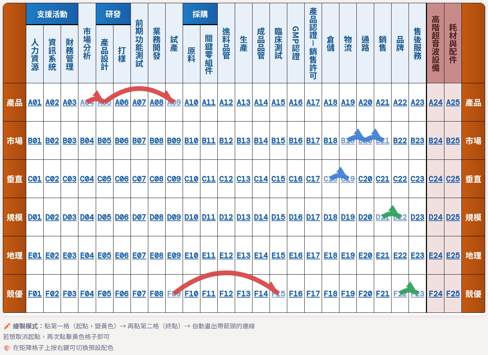
完成的策略矩陣：左側是價值鏈單元（欄），右側兩欄是產品，彩色箭頭是各個策略構想。
2. 策略名稱與說明
頁面最上方的「策略名稱與說明」區有兩個欄位：
- 策略名稱：會用在存檔檔名（
<策略名稱>_存檔.json、<策略名稱>_價值鏈.json）與匯出的 PPTX 標題。
- 說明：可以用格子代號寫成一段文字，例如「…為連鎖診所通路製造高階超音波設備(A24)…」。
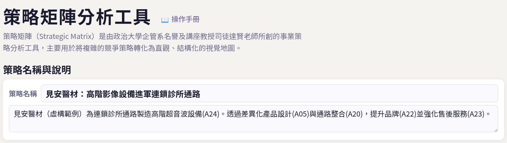
頁首標題旁有「📖 操作手冊」連結（就是本頁）；下方是策略名稱與說明。輸入後會自動暫存。
3. 價值鏈編輯
價值鏈分成三個區：上方的支援活動、中間的主要活動、下方的產品。展開到矩陣時，這些單元會成為矩陣的欄位。
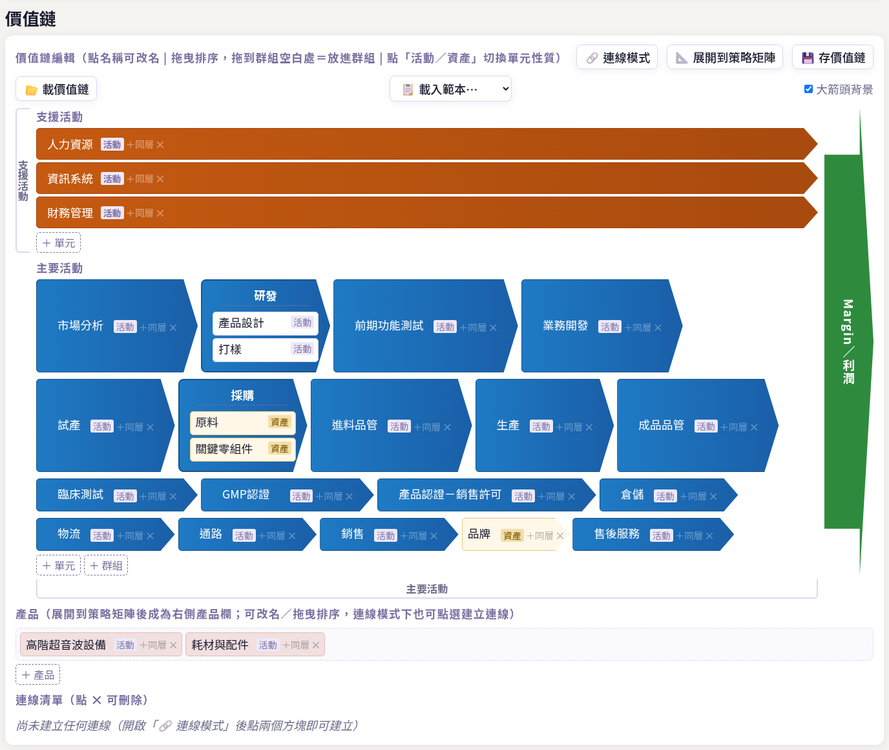
價值鏈編輯區（載入「醫療器材製造」範本後）。右側綠色大箭頭是「Margin／利潤」背景。
新增與刪除
- 支援活動區最後的 ＋ 單元：加一個支援活動（支援活動區只能放單元，不能放群組）。
- 主要活動區最後的 ＋ 單元、＋ 群組：加一個單元或一個群組（群組是把相關的子項歸在同一大類下，如「研發」下有「產品設計」「打樣」）。
- 每個方塊上的 ＋同層：在它旁邊加一個同層的新方塊；群組還有 ＋子項，在群組內加子項。
- 方塊上的 ✕：刪除。刪除有內容的群組會先跳出確認視窗。
改名
直接點方塊上的名稱就能修改，按 Enter 或點別處即確定（名稱最多 20 字；過長會自動換行）。
活動／資產
每個單元右側有「活動」或「資產」標籤，點一下就切換。資產方塊以淡黃色顯示，代表這個單元是企業擁有的資源（如品牌）而非一個流程步驟。
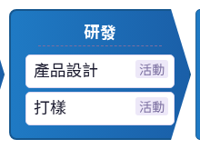
群組「研發」與它的兩個子項。
拖曳排序
- 按住方塊拖到另一個方塊上：放在目標的前半就插到它前面，放在後半就插到它後面；畫面上會出現虛線空位預覽。
- 拖到群組的空白處＝放進該群組的最後面。
- 不能跨區（例如主要活動不能拖到支援活動）。
大箭頭背景
價值鏈工具列右側的「大箭頭背景」勾選框，可顯示／隱藏右側「Margin／利潤」的大箭頭背景（只影響價值鏈的外觀）。
價值鏈工具列：連線模式、展開到策略矩陣、存／載價值鏈、載入範本、大箭頭背景。
價值鏈的編輯不能用「↩ 復原」還原，請小心刪除；若擔心改壞，可先按 💾 存價值鏈 備份。
4. 載入範本
價值鏈工具列的 📋 載入範本… 下拉選單，內建以下範本，選一個即可套用：
- 生醫：醫療器材製造、藥廠在台銷售、連鎖藥局、連鎖復健科診所、連鎖醫美診所、醫療設備代理
- 其他產業：工業電腦、醫師網紅經紀、原物料製造、連鎖加盟
- 理論骨架：通用基本價值鏈
載入範本會取代目前整條價值鏈（含產品），因此會先跳出確認視窗。載入後矩陣不會自動更新，要再按「📐 展開到策略矩陣」才會套用。範本只是起點，載入後可自由改名、增刪。
另外 💾 存價值鏈 會把目前價值鏈存成 <策略名稱>_價值鏈.json，📂 載價值鏈 可讀回，方便在不同專案間重複使用同一條價值鏈。
5. 價值鏈連線
價值鏈連線用來標示兩個方塊之間的順序或關係（例如「產品設計 → 試產」）。
- 按 🔗 連線模式 開啟（按鈕變成紫底白字，提示文字改變）。
- 點第一個方塊（起點，變成黃色）。
- 再點第二個方塊（終點），就建立一條連線。若再點同一個方塊則取消起點。
- 做完再按一次「🔗 連線模式」關閉，回到平常的編輯狀態。
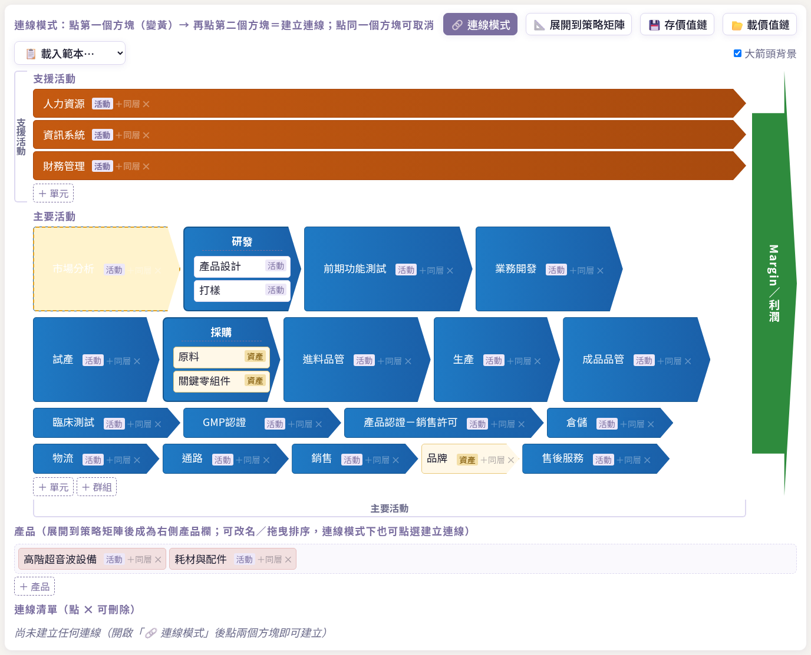
連線模式下，點了「市場分析」，它變成黃色，等待點選終點。
已建立的連線會畫成細箭頭，並列在價值鏈下方的「連線清單」，點 ✕ 可刪除。同一對方塊（相同方向）不能重複連線，重複時會跳出提示。
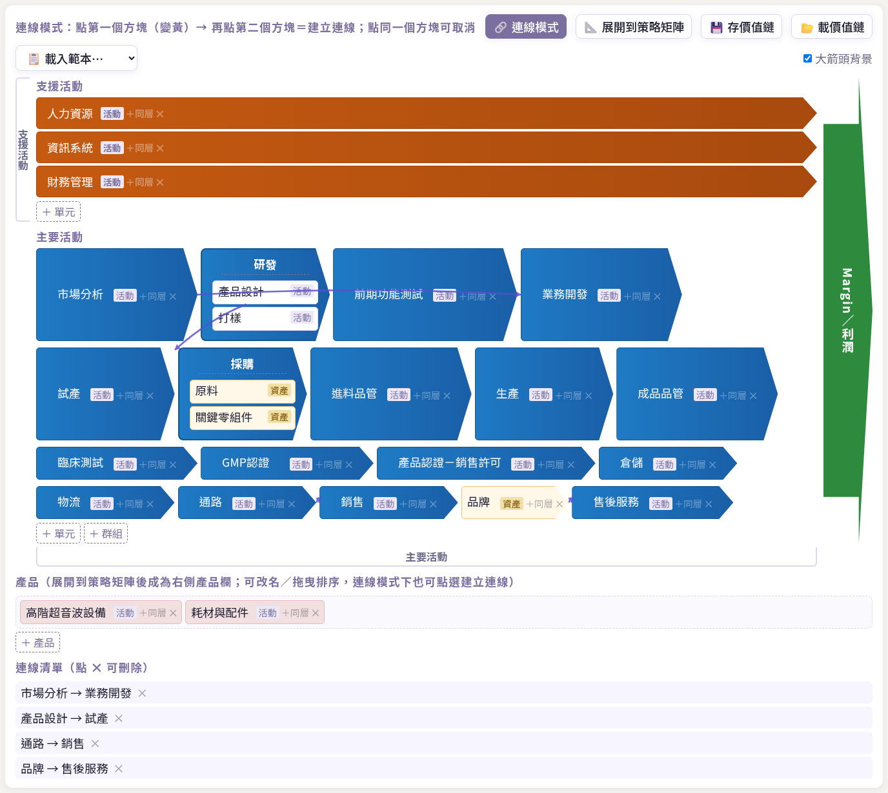
連線完成：價值鏈上出現細箭頭，下方有連線清單。
6. 產品面板
價值鏈下方的「產品」區，放的是這張矩陣要分析的產品（或產品線）；展開後會成為矩陣右側的產品欄。
- ＋ 產品：新增一個產品。
- 點名稱可改名；✕ 刪除；可拖曳排序。
- 連線模式下，產品也能點選來建立連線。
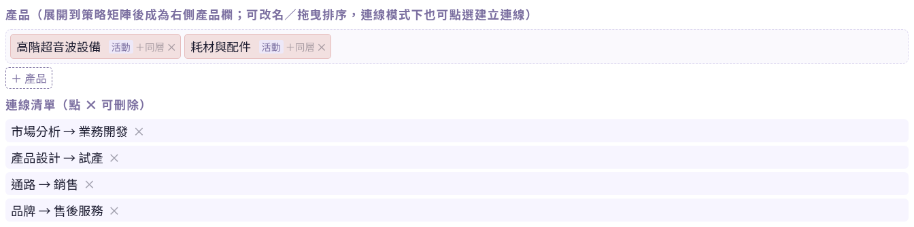
產品面板（上）與連線清單（下）。
7. 展開到策略矩陣
按價值鏈工具列的 📐 展開到策略矩陣，會把價值鏈的所有單元依序變成矩陣的欄位（價值鏈至少要有 2 個單元，否則會提示無法展開）。
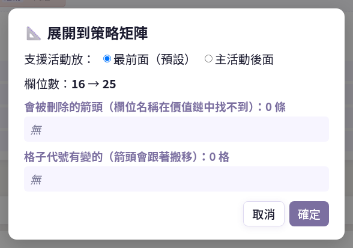
展開前的確認對話框。
對話框內容
- 支援活動放：選「最前面（預設）」或「主活動後面」，決定支援活動欄位排在矩陣的左側或接在主要活動之後。
- 欄位數：顯示展開前 → 展開後的欄位數。
- 會被刪除的箭頭：若已畫的箭頭指到價值鏈裡已不存在的欄位，那些箭頭會被刪除，這裡會列出來。
- 格子代號有變的：欄位增減或換順序後，格子代號（如 A05）可能改變，箭頭會跟著搬到同名欄位。
按「確定」套用，「取消」則什麼都不改。
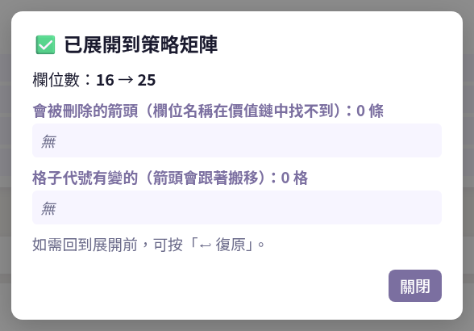
展開完成的結果視窗；按「關閉」即可。
展開可以用 ↩ 復原 還原，所以可以放心嘗試。
8. 策略構想
一張策略矩陣可以同時比較多個「策略構想」，每個構想用一種顏色的箭頭表示。
策略構想列：目前選取的構想外框會加粗。
- 選取：點標籤的空白處，設為「目前策略」，之後畫的箭頭都屬於它。
- 改名：點名稱直接修改（最多 14 字）。
- 刪除：點 ✕，至少要保留 1 個。
- 新增：在「新增策略名稱」輸入框打上名稱後，按 ＋ 新增 或 Enter，最多 8 個。
9. 畫箭頭、補充說明、排序、復原、清除
畫箭頭
確認操作列的 ✏️ 繪製箭頭 是選取狀態，然後：
- 點矩陣上的起點格，該格變成黃色。
- 再點終點格，就畫出一條帶箭頭的連線，顏色為目前策略的顏色。
- 若想取消起點，再點一次黃色的格子。
要純粹瀏覽、避免誤點時，切換到 👁 檢視模式。
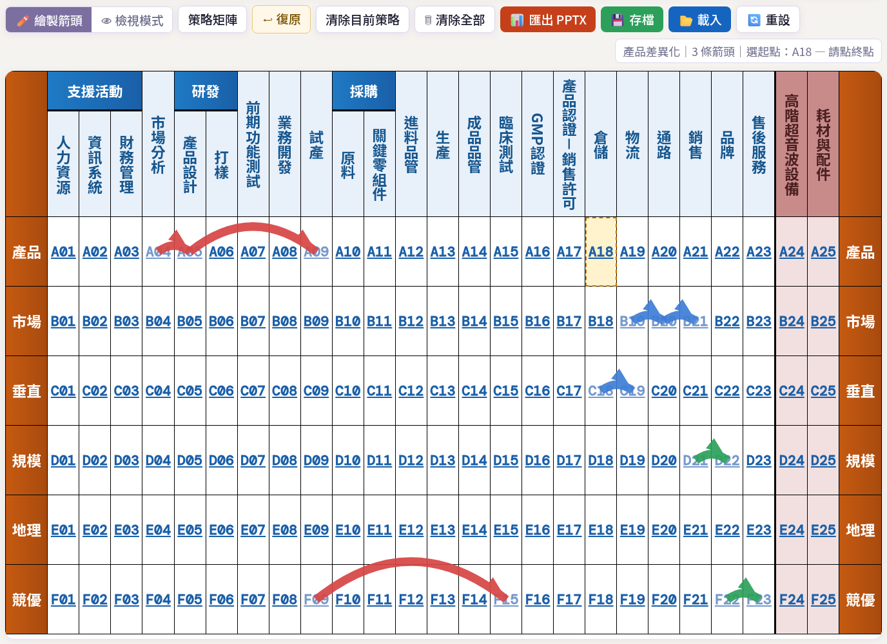
起點格 A18 變成黃色，狀態列提示「請點終點」。
箭頭清單與補充說明
「策略矩陣展開」區會列出所有箭頭，格式為「策略名：A04 → A05」。
- 補充說明…輸入框：寫下這條箭頭的意義，匯出 PPTX 時會放進該箭頭的步驟頁。
- ⠿ 拖曳：調整順序，只能在同一個策略內排序（順序會影響 PPTX 步驟頁的先後）。
- ✕：刪除這條箭頭。
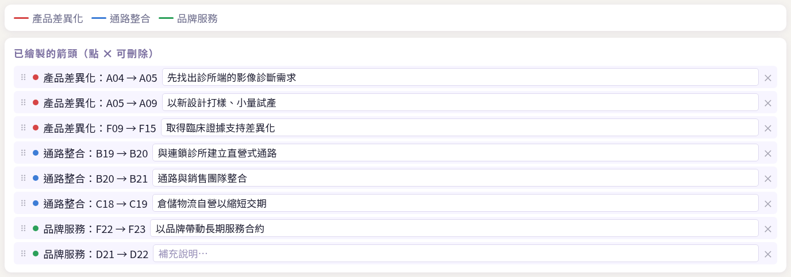
圖例（各策略的顏色）與已繪製的箭頭清單。
操作列
操作列：模式切換、策略矩陣切換、復原、清除、匯出、存檔、載入、重設。
- ↩ 復原：還原上一個動作，最多 80 步。可復原新增／刪除／排序箭頭、刪除策略、清除、展開到策略矩陣；價值鏈的編輯不能復原。
- 清除目前策略：清掉目前選取策略的所有箭頭，不會詢問，但可以用「↩ 復原」救回。
- 🗑 清除全部：清掉所有策略的所有箭頭，會先確認。
10. 產業矩陣切換與右鍵配色
產業矩陣切換
操作列的 策略矩陣 按鈕按一下會切成「策略矩陣＋產業矩陣」，矩陣左側的列標籤改為產業矩陣用語：關聯、市場、垂直、規模、地理、KSF's（再按一次切回）。
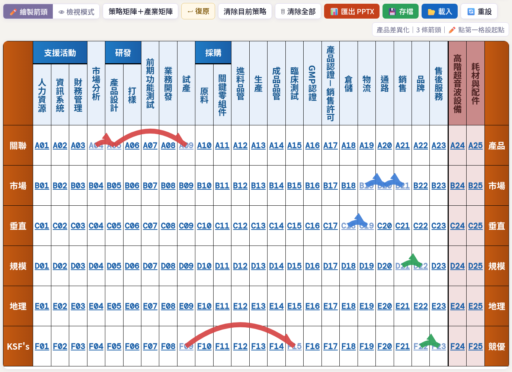
切換後左側列標籤變為「關聯／市場／垂直／規模／地理／KSF's」。
右鍵配色
在矩陣的格子或欄標題上按右鍵，會出現配色選單，共四種：價值鏈同調（藍橘，預設）、標準規範（黃藍）、冷色簡約、高對比黑白。選一個即可套用。
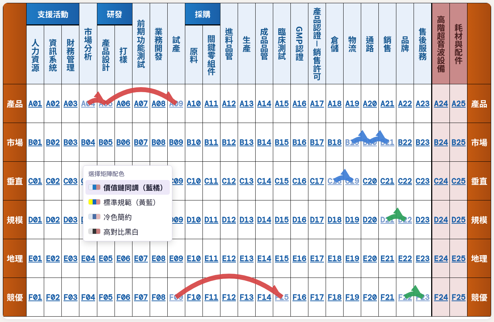
在格子上按右鍵出現的配色選單。
11. 匯出 PPTX
按 📊 匯出 PPTX，工具會產生一份可編輯的 PowerPoint，內容依序為：
- 價值鏈頁。
- 每一條箭頭一張步驟頁（顯示該步驟的矩陣位置，並帶入你寫的「補充說明」）。
- 總覽頁。
匯出過程會顯示進度視窗，完成後瀏覽器會下載檔案。想讓簡報更好講，建議先替每條箭頭寫好補充說明、排好順序。
12. 存檔／載入／重設
- 💾 存檔：把整張策略矩陣（價值鏈、欄位、策略構想、箭頭、配色）存成
<策略名稱>_存檔.json。
- 📂 載入：選擇之前存的 JSON 檔還原。
- 🔄 重設：清除瀏覽器裡的自動存檔，回到預設狀態；會先確認，且無法復原。
瀏覽器自動存檔
工具會在你操作時，自動把目前內容存在這台電腦的瀏覽器裡（localStorage），下次用同一個瀏覽器開啟網頁時會自動還原。但這只是「暫存」：換電腦、換瀏覽器、使用無痕視窗，或清除瀏覽器資料後，內容都會不見。
重要的作品請務必按「💾 存檔」存成檔案，並自行保管。
13. 常見問題
- Q：價值鏈改錯了，可以按「↩ 復原」嗎？
- 不行。「↩ 復原」只管矩陣這一側的動作（箭頭、策略、清除、展開）。價值鏈的編輯不能復原；建議大改前先按「💾 存價值鏈」備份。
- Q：策略構想最多幾個？
- 最多 8 個，名稱最多 14 個字；至少要保留 1 個。
- Q：可以復原幾步？
- 最多 80 步。
- Q：我改了價值鏈，為什麼矩陣沒有跟著變？
- 價值鏈與矩陣是分開的，改完要再按「📐 展開到策略矩陣」才會更新。
- Q：展開後有些箭頭不見了？
- 如果箭頭指向的欄位名稱在價值鏈裡已經不存在，展開時就會刪除那條箭頭（對話框會先列出）。不想要的話按「取消」，或展開後按「↩ 復原」。
- Q：重新開啟網頁，我的資料不見了？
- 自動存檔只存在瀏覽器內。換瀏覽器／電腦、無痕模式、清除瀏覽器資料、或按了「🔄 重設」都會消失。重要資料請用「💾 存檔」另存檔案。
- Q：載入範本後，矩陣為什麼沒變？
- 載入範本只換價值鏈；矩陣要按「📐 展開到策略矩陣」才會更新。
- Q：手機或平板可以用嗎？
- 可以瀏覽，但畫箭頭、拖曳排序在電腦上比較順手，建議用電腦操作。